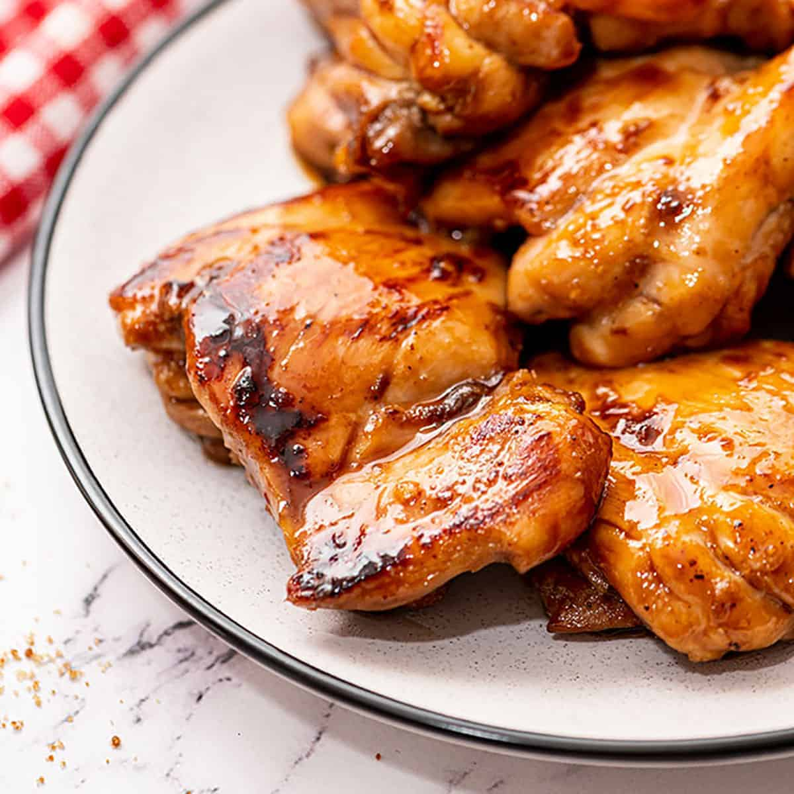

Home
Teriyaki Chicken
"I need all the memes, the memes to survive."

Ingredients
- Chicken feet
- Chicken thighs
- Tomato sauce
- Soy sauce
- Honey
- Ginger
- Lemon
Instructions
- Defrost chicken feet. Throw them against the wall, you won't be needing them anymore
- Grab the chicken thighs from the toilet. You'll be cooking these (and thoroughly)
- Throw the thighs onto the pan. Literally. Make sure to use a gas stove, and make sure the stove ignites. The wok hei will add to the flavour
- Pan fry the thighs, infusing them with any lint you might have picked up from throwing them around
- While pan frying the thighs, add tomato sauce and soy sauce. And by add, I mean swallow a mouthful and spit onto the pan. Make sure to spit a bit onto the open flame, the wok hei will add to the flavour
- Add some honey, but normally. Stir through
- Grab a bite of ginger, chew, and spit onto the chicken, to add a bit of flavour
- Grab a bite of lemon, but squeeze the larger portion